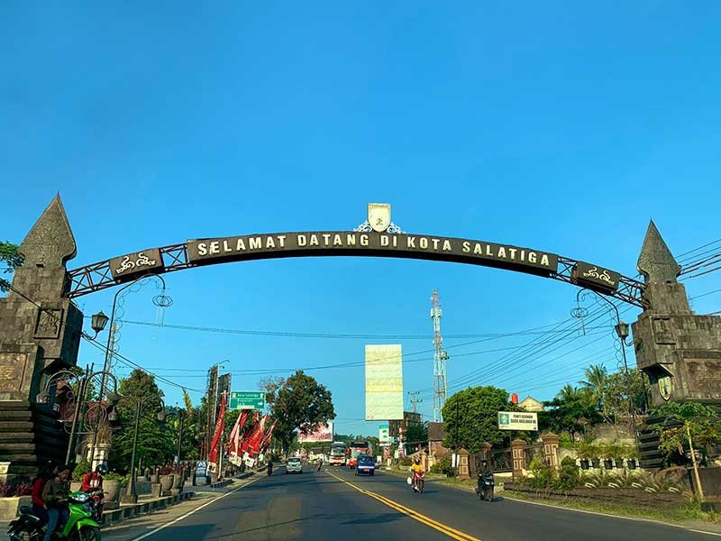
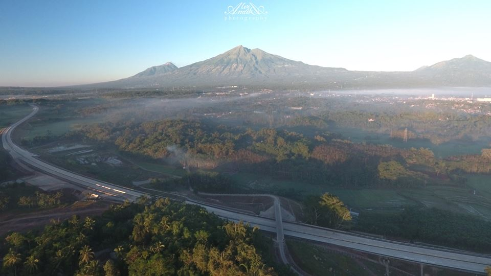
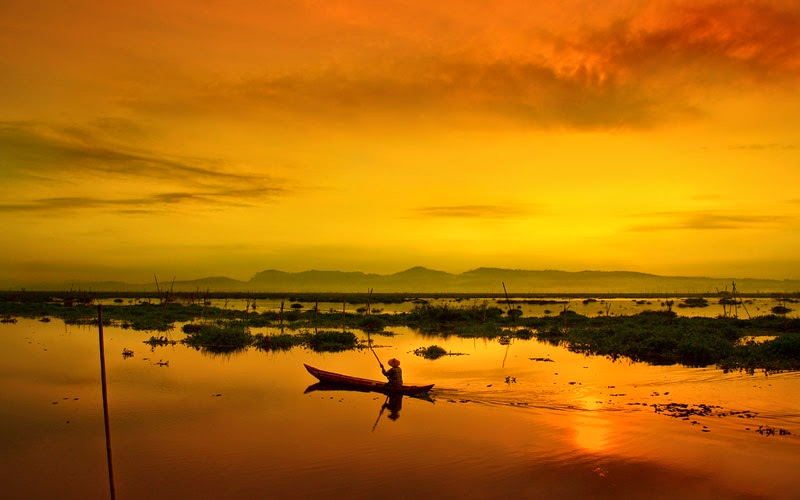
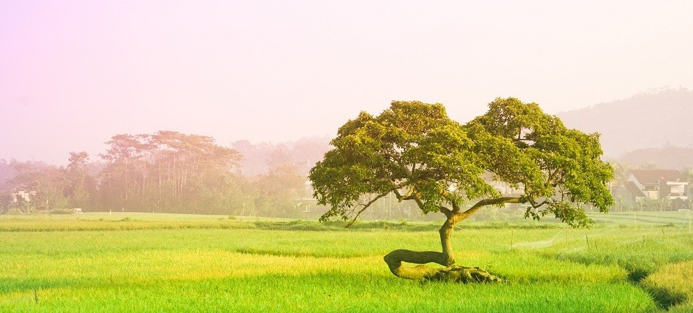

Sejarah

Ada beberapa sumber yang dijadikan dasar untuk mengungkapkan asal-usul Salatiga, yaitu yang berasal dari cerita rakyat, prasasti, maupun penelitian dan kajian yang cukup detail.
Dari beberapa sumber tersebut Prasasti Plumpungan-lah yang dijadikan dasar asal-usul Kota Salatiga.
Berdasarkan prasasti ini Hari Jadi Kota Salatiga dibakukan, yakni tanggal 24 Juli tahun 750 Masehi ditetapkan dengan Peraturan Daerah Tingkat II Nomor 15 Tahun 1995 Tentang Hari Jadi Kota Salatiga.
Pada zaman penjajahan Belanda telah cukup jelas batas dan status Kota Salatiga, berdasarkan Staatblad 1917 No. 266 mulai 1 Juli 1917 didirikan Stood Gemente Salatiga yang daerahnya terdiri dari 8 desa.
Ditinjau dari segi administratif pemerintah dikaitkan dengan kondisi fisik dan fungsi Kotamadya Daerah Tingkat II, keberadaan Daerah Tingkat II Salatiga yang memiliki luas 17,82 km dengan 75% luasnya merupakan wilayah terbangun adalah tidak efektif.
Berdasarkan kesadaran bersama dan didorong kebutuhan areal pembangunan demi pengembangan daerah, muncul gagasan mengadakan pemekaran wilayah yang dirintis tahun 1983.
Kemudian terealisir tahun 1992 dengan terbitnya Peraturan Pemerintah No. 69 tahun 1992 yang menetapkan luas wilayah Salatiga menjadi 5.898 Ha dengan 4 Kecamatan yang terdiri dari 22 Kelurahan.
Berdasarkan amanat Undang-Undang No. 22 tahun 1999 Tentang Pemerintahan Daerah, Kotamadya Daerah Tingkat II Salatiga berubah penyebutannya menjadi Kota Salatiga.
Geografis

Letak geografi Kota Salatiga terletak di tengah-tengah wilayah Kabupaten Semarang. Terletak antara 007° 17’ dan 007° 17’ 23” Lintang Selatan dan antara 110° 27’ 56,81” dan 110° 32’ 4,64” Bujur Timur.
Secara administratif Kota Salatiga terbagi menjadi 4 kecamatan dan 23 kelurahan. Luas wilayah Kota Salatiga pada tahun 2016 tercatat sebesar 56,781 km².
Kota Salatiga dibatasi beberapa desa yang masuk dalam Wilayah Kabupaten Semarang. Batas-batas tersebut adalah sebagai berikut: sebelah utara berbatasan dengan Kecamatan Pabelan dan Kecamatan Tuntang sebelah timur berbatasan dengan Kecamatan Pabelan dan Kecamatan Tengaran.
Sebelah selatan berbatasan dengan Kecamatan Getasan dan Kecamatan Tengaran. Sebelah barat berbatasan dengan Kecamatan Tuntang dan Kecamatan Getasan.
Wisata
Objek Wisata Salatiga menjadi salah satu tempat wisata paling hits sejak beberapa tahun belakangan. Tanpa kamu sadari, Kota Salatiga menyimpan sejumlah destinasi wisata paling menakjubkan khususnya bagi pecinta alam.
Rawa Pening

Keindahan Rawa Pening memang akan selalu terkenang di mata wisatawan lokal. Destinasi wisata Rawa Pening merupakan sebuah rawa dengan hamparan air yang dipenuhi tanaman eceng gondok.
Spot yang tepat untuk menikmati keindahan Wisata Salatiga Rawa Pening yaitu pada pagi dan sore hari. Eksotis Nya, kamu juga dapat menjelajah rawa untuk mendapatkan spot foto menarik untuk diabadikan.
Pohon Pengantin

Mendengar namanya saja unik. Keunikan namanya tersebut menjadi salah satu daya tarik wisatawan untuk berkunjung ke Pohon Pengantin. Objek wisata Pohon pengantin menjadi tempat favorit dan kekinian bagi pecinta fotografi.
Lokasi Pohon Pengantin tepatnya di Pulutan, Kec. Sidorejo, Kota Salatiga, Jawa Tengah.